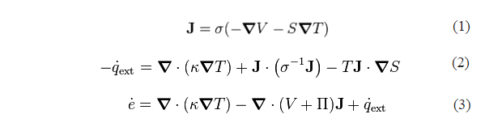

Peltier Tiles - Theory
An interesting phenomenon that scientists have observed is the Peltier effect, which is when a temperature difference is caused by applying a voltage between two electrodes. It has also been found that the opposite is true, namely that when there is a temperature difference between certain configurations of semiconducting electrodes can create a voltage between them. This voltage can then be used to power anything that needs electricity. Peltier tiles have harnessed this natural occurrence, called the Seebeck effect, to create electricity all within a small, convenient plate. The general makeup of a Peltier tile can be seen in figure 1.
 Figure 1: Peltier Tile Diagram
Figure 1: Peltier Tile Diagram
The two effects above are covered under the Thermoelectric effect. This effect is governed by several equations including the current equation, equation 1, the full thermoelectric equation for the energy accumulation, equation 2, and the heat equation, equation 3.
J is current density, V is the local voltage, is the local conductivity, S is the Seebeck coefficient, ext is heat production rate, is the temperature gradient, is the Thomson coefficient, and e dot is energy accumulation.